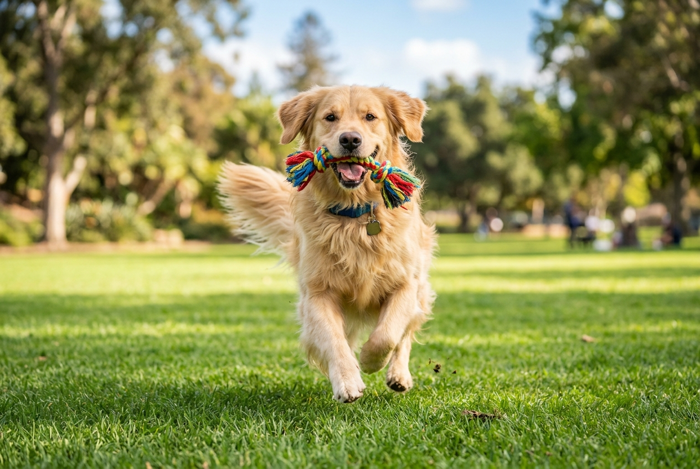
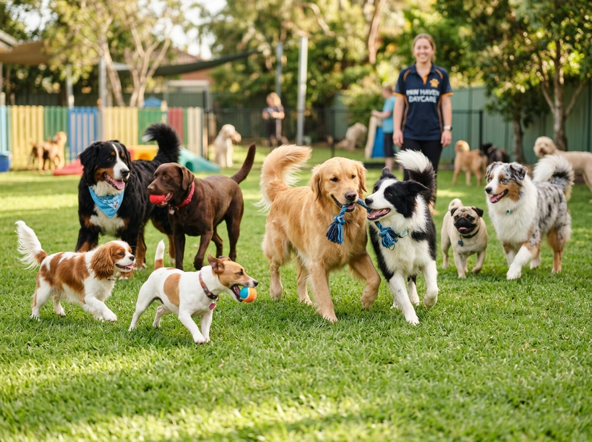
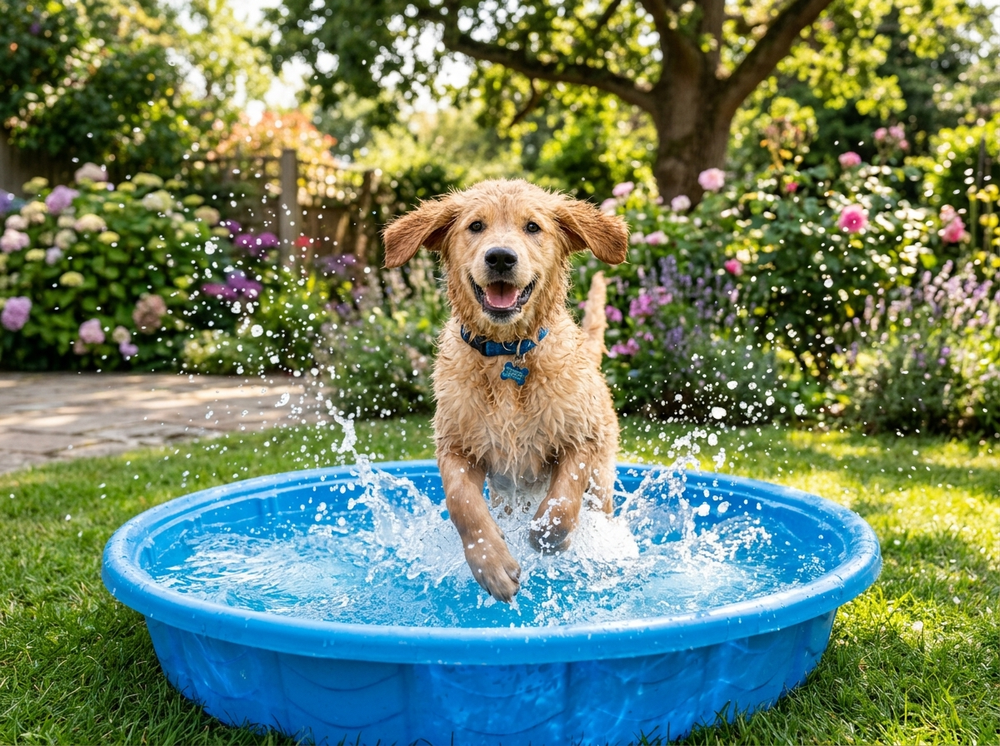
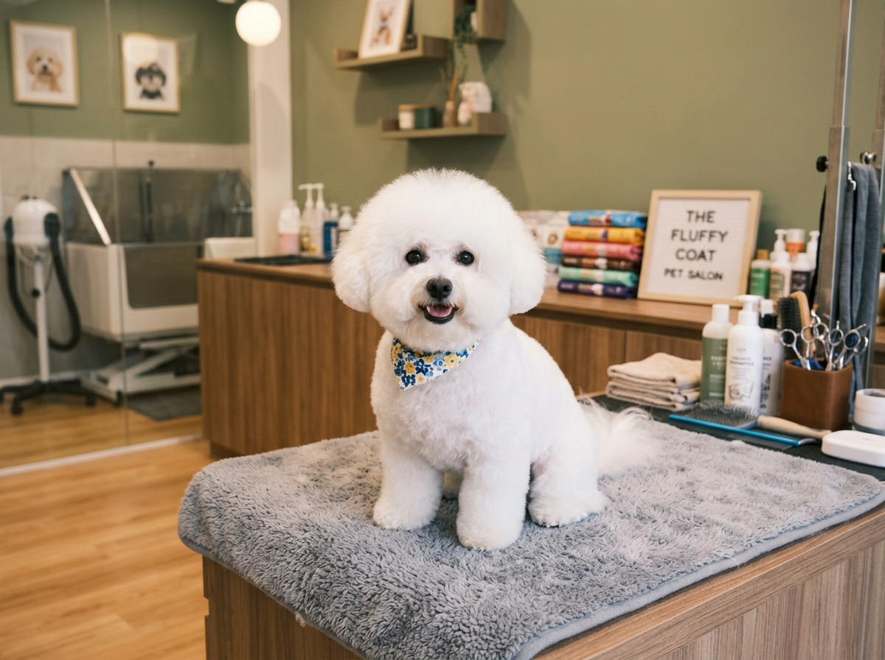

Um espaço completo de hotel, creche (daycare) e estética canina na Zona Sul de Porto Alegre. Cuidado profissional, carinho de verdade e espaço de sobra para correr.

Criamos um ambiente seguro e super divertido com tudo o que seu cão precisa para se sentir em casa.

Mais ProcuradoGastou energia, fez amigos e se divertiu! Nossa creche conta com rotinas de enriquecimento ambiental, socialização e muito espaço ao ar livre para correr.

Vai viajar? Seu melhor amigo vai curtir as férias dele aqui! Hospedagem humanizada, com acompanhamento, conforto térmico, segurança e rotina personalizada.

Seu pet cheiroso por dias! Serviço de estética canina focado no bem-estar, com profissionais experientes e produtos premium para peles sensíveis.
O Hotel e Creche Três Peludos foi idealizado para ser o segundo lar do seu pet. Unimos uma estrutura física privilegiada a uma equipe que realmente ama o que faz.
Ampla área ao ar livre, piscina canina sob medida e atividades refrescantes no calor, como picolés saudáveis de frutas.
Sabemos da saudade! Enviamos relatórios, fotos e vídeos ao longo do dia para você acompanhar a felicidade do seu amigo de perto.
Cada pet é único. Respeitamos o tempo de adaptação e os limites de cada animal, garantindo uma experiência leve no banho ou na hospedagem.
Com nota máxima de 4.9 estrelas no Google, nosso compromisso é ver os cães saindo sempre felizes!
"Super recomendo!! Cheguei até o local por indicação, e realmente o atendimento é perfeito, nossa cachorrinha saiu feliz e não estressada do banho e tosa. Parabéns!!!! Não deixo mais vocês rsrsrsrs"
"Melhor creche e pet da zona sul. Não há a menor dúvida do atendimento e qualidade do serviço prestado. O pessoal é super atencioso e os pets são tratados super bem. O serviço de banho e tosa é maravilhoso, o pet fica cheiroso por dias. Recomendo a todos da zona sul que procuram por qualidade e confiabilidade no serviço oferecido."
"Meus doguinhos amaaaam ir na Três Peludos! Eles tem um ótimo serviço de creche e hotel. Muitos aumigos pra brincar e correr, no verão tem picolé de frutas e piscina pra matar o calor. Os tios da Três Peludos são maravilhosos! Dão atenção..."
Localizado no bairro Cristal, na Zona Sul de Porto Alegre, o Hotel e Creche Três Peludos nasceu do desejo de oferecer um ambiente que alie segurança e bem-estar físico e emocional para os cães.
Entendemos que deixar o seu melhor amigo sob cuidados de terceiros exige confiança absoluta. Por isso, investimos em uma equipe treinada para realizar manejo gentil e supervisionar todas as interações e brincadeiras com base no comportamento de cada cão.
Nosso espaço foi todo adaptado com pisos adequados, grades de proteção e áreas de lazer ao ar livre para proporcionar a melhor estadia de Porto Alegre.
Dúvidas, orçamentos ou agendamentos? Mande uma mensagem ou venha nos visitar!
Av. Wenceslau Escobar, 3229 - Cristal, Porto Alegre - RS, 91900-000
(51) 99941-2850
Segunda a Sexta: 07:30 às 19:30
Abre quinta às 07:30
Av. Wenceslau Escobar, 3229 - Cristal. Próximo ao Barra Shopping Sul.
Ver Rotas no Google Maps